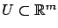
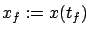
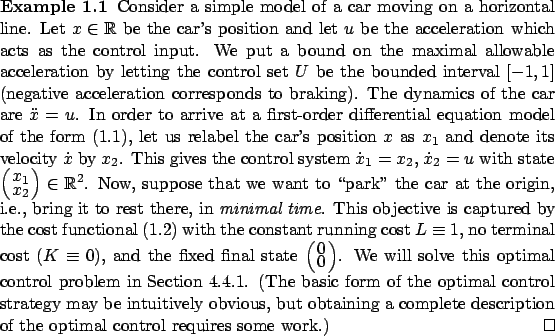

The first basic ingredient of an optimal control problem is a control system. It generates possible behaviors. In this book, control systems will be described by ordinary differential equations (ODEs) of the form

,
The second basic ingredient is the cost functional. It associates a cost
with each possible behavior. For a given initial data  ,
the behaviors are parameterized by control functions
,
the behaviors are parameterized by control functions  . Thus, the cost
functional assigns a cost value to each admissible control. In this book,
cost functionals will be denoted by
. Thus, the cost
functional assigns a cost value to each admissible control. In this book,
cost functionals will be denoted by  and will be of the form
and will be of the form

is the final (or terminal) state which is either free or fixed or belongs to some given target set. Note again that
The optimal control problem can then be posed as follows:
Find a control  that minimizes
that minimizes  over all
admissible controls (or at least over
nearby controls).
Later we will need to come back to this problem formulation
and fill in some technical details. In particular, we will need to specify
what regularity properties should be imposed on the function
over all
admissible controls (or at least over
nearby controls).
Later we will need to come back to this problem formulation
and fill in some technical details. In particular, we will need to specify
what regularity properties should be imposed on the function  and on the admissible controls
and on the admissible controls  to ensure that state trajectories of the control
system are well defined. Several versions of the above problem (depending, for
example, on the role of the final time and the final state) will be
stated more precisely when we are ready to study them. The reader who wishes
to preview this material can find it in Section 3.3.
to ensure that state trajectories of the control
system are well defined. Several versions of the above problem (depending, for
example, on the role of the final time and the final state) will be
stated more precisely when we are ready to study them. The reader who wishes
to preview this material can find it in Section 3.3.
It can be argued that optimality is a universal principle of life, in the sense that many--if not most--processes in nature are governed by solutions to some optimization problems (although we may never know exactly what is being optimized). We will soon see that fundamental laws of mechanics can be cast in an optimization context. From an engineering point of view, optimality provides a very useful design principle, and the cost to be minimized (or the profit to be maximized) is often naturally contained in the problem itself. Some examples of optimal control problems arising in applications include the following:

In this book we focus on the mathematical theory of optimal control. We will not undertake an in-depth study of any of the applications mentioned above. Instead, we will concentrate on the fundamental aspects common to all of them. After finishing this book, the reader familiar with a specific application domain should have no difficulty reading papers that deal with applications of optimal control theory to that domain, and will be prepared to think creatively about new ways of applying the theory.
We can view the optimal control problem
as that of choosing the best path among all paths
feasible for the system, with respect to the given cost function. In this
sense, the problem is infinite-dimensional, because the
space of paths is an infinite-dimensional function space. This problem
is also a dynamic optimization problem, in the sense that it involves
a dynamical system and time.
However, to gain appreciation for this problem,
it will be useful to first recall some basic facts about
the more standard static finite-dimensional optimization problem,
concerned with finding
a minimum of a given function
 .
Then, when we get back to infinite-dimensional optimization, we will
more clearly see the similarities but also the differences.
.
Then, when we get back to infinite-dimensional optimization, we will
more clearly see the similarities but also the differences.
The subject studied in this book has a rich and beautiful history; the topics are ordered in such a way as to allow us to trace its chronological development. In particular, we will start with calculus of variations, which deals with path optimization but not in the setting of control systems. The optimization problems treated by calculus of variations are infinite-dimensional but not dynamic. We will then make a transition to optimal control theory and develop a truly dynamic framework. This modern treatment is based on two key developments, initially independent but ultimately closely related and complementary to each other: the maximum principle and the principle of dynamic programming.